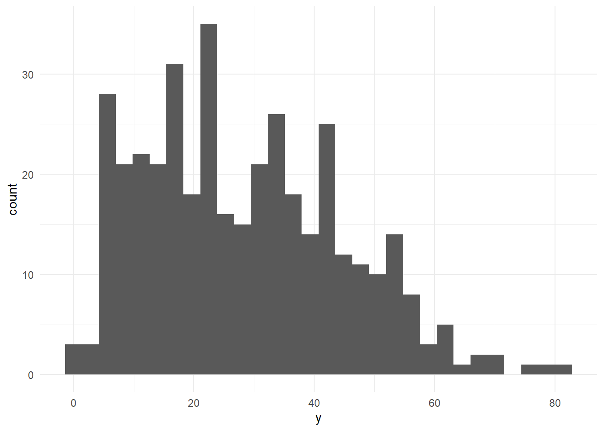
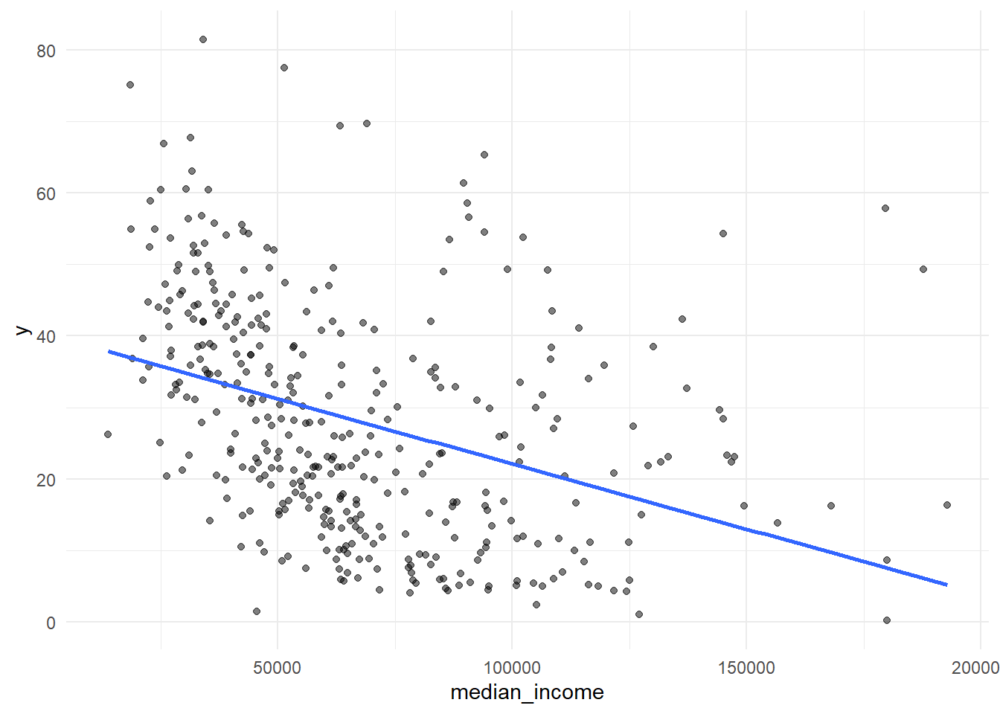
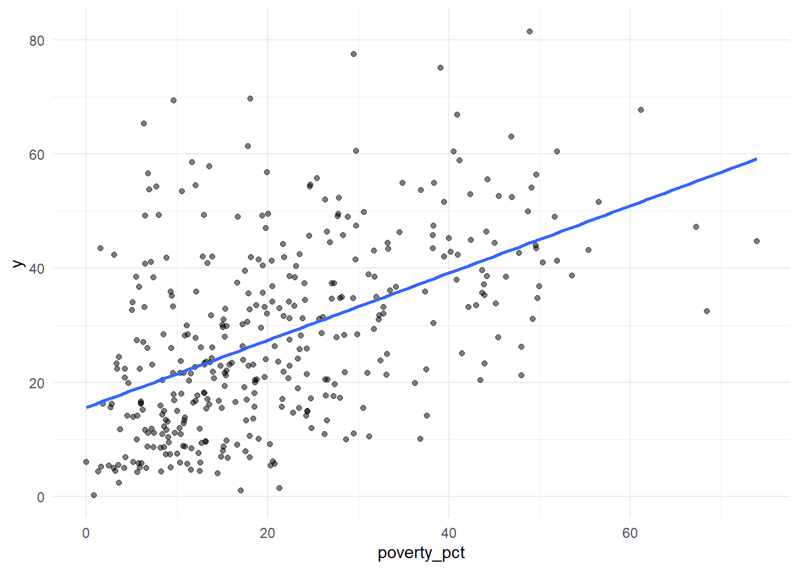
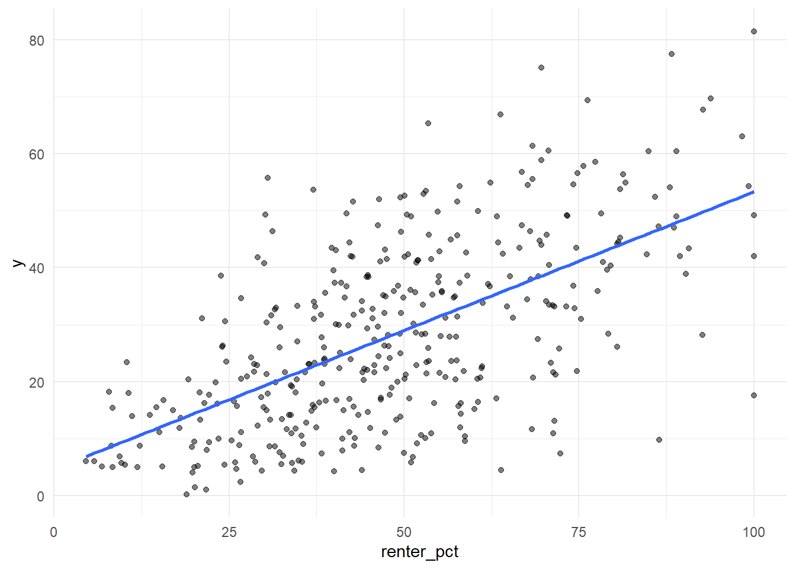
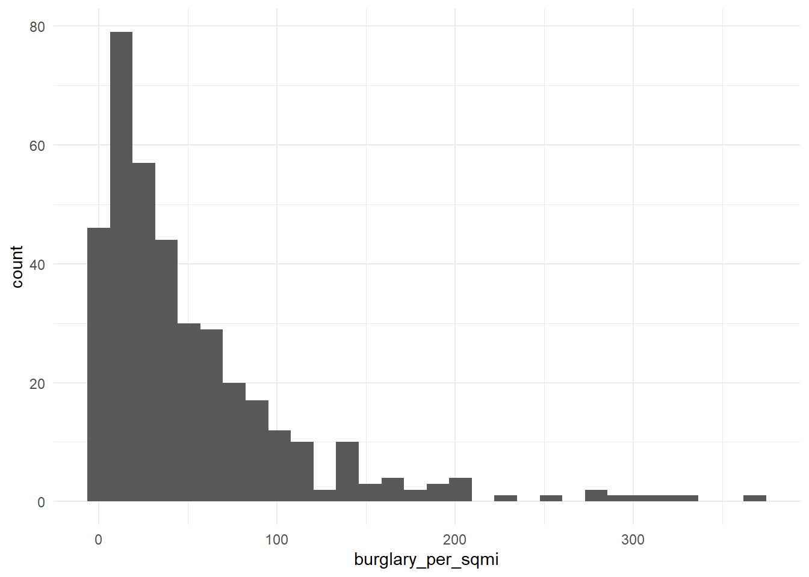
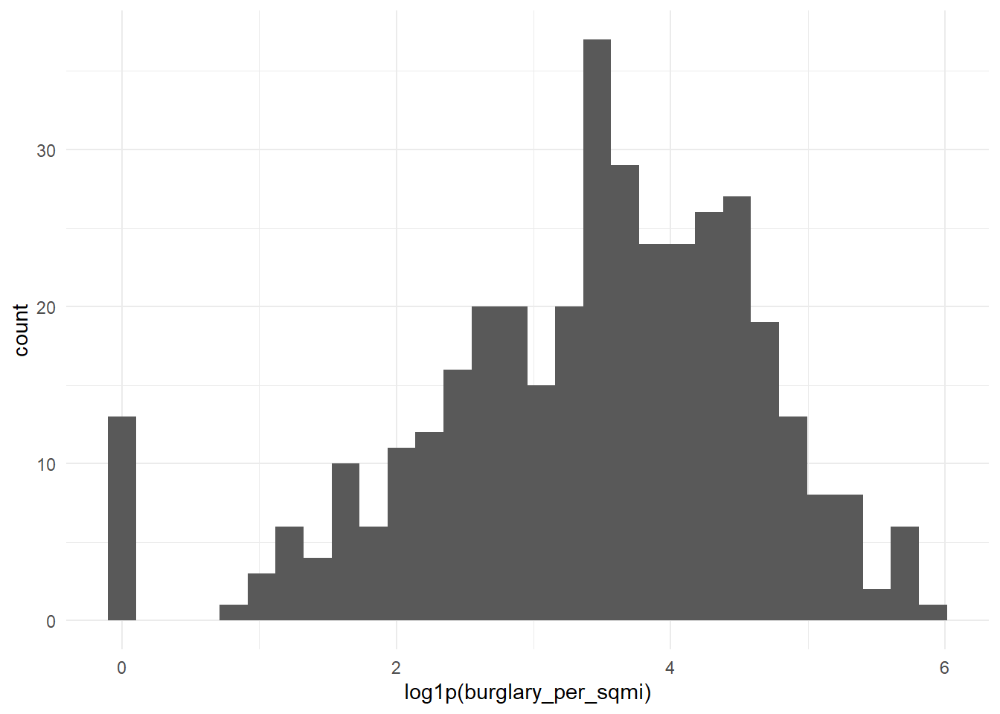
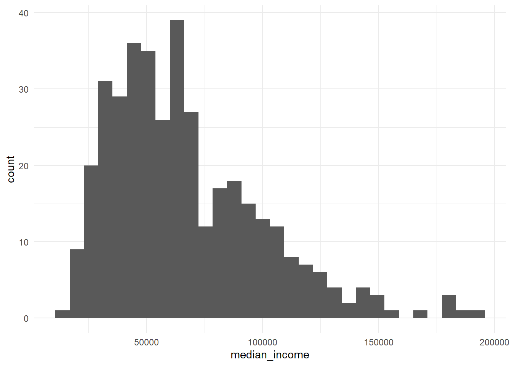
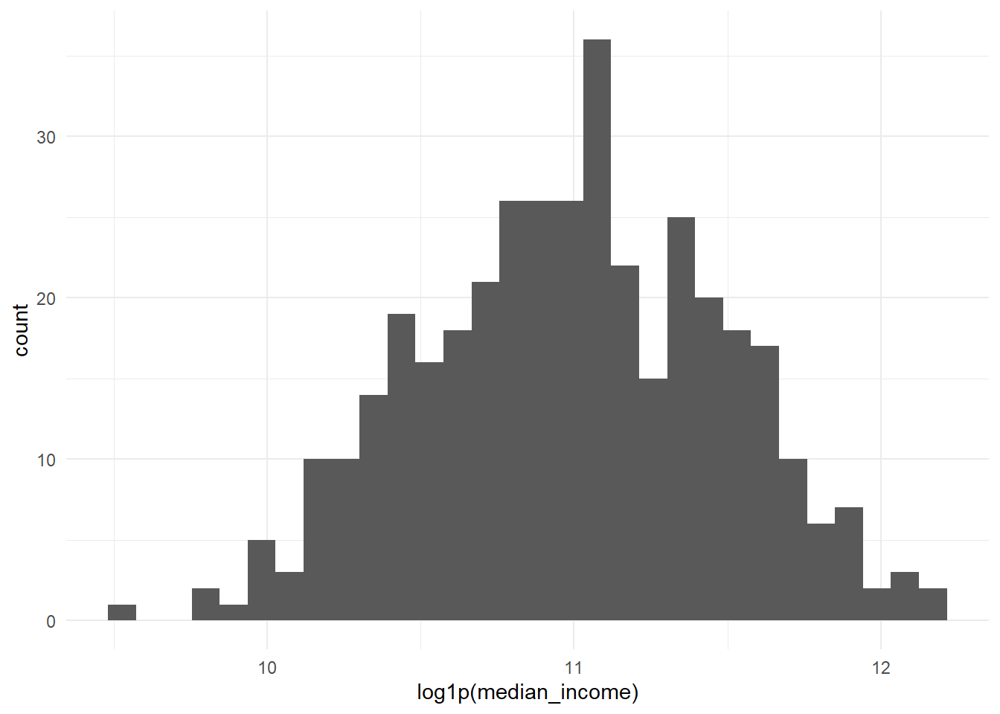
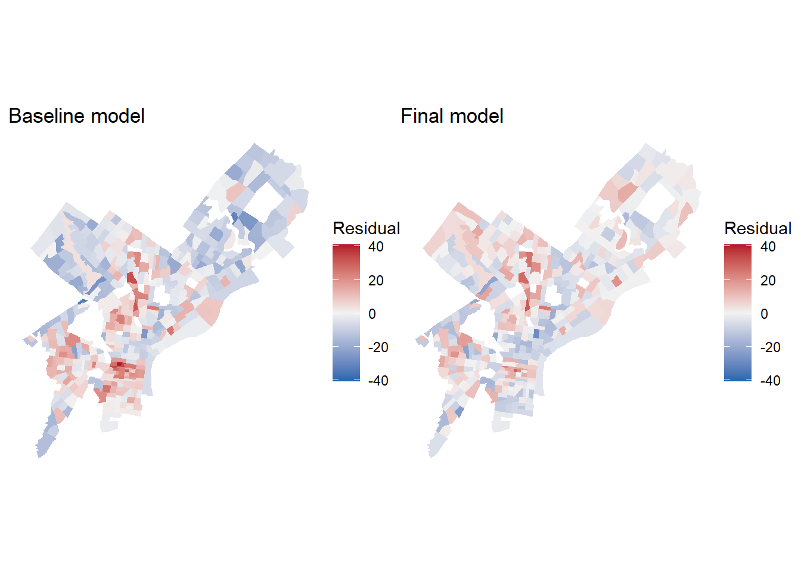
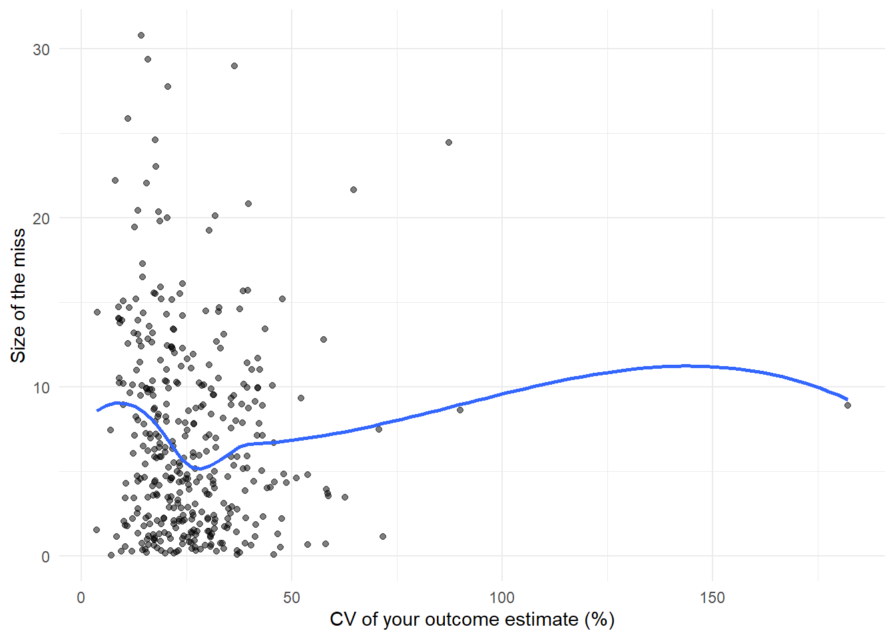

Code
library(tidyverse)
library(tidycensus)
library(sf)
library(caret)
library(patchwork)
Sys.getenv("CENSUS_API_KEY") != "" # should print TRUE[1] TRUEMUSA 5080 · Integrates Weeks 1–5 · Due Friday, October 16
This is not a competition. There’s no leaderboard and no target RMSE. The goal is to practice the full prediction workflow on a question you choose, and to find out what actually helps. Some features you’re sure will help won’t, and some you add on a whim will. Both are findings.
You’ll:
Timing. Parts 1–4 use only what we’ve covered through Week 5. You can finish them before the October 9 lecture. Part 5 is new material; the lecture explains it, and the instructions below give you the essentials.
Type the code yourself. The worked examples show the pattern. Your job is to apply it to your outcome and your data choices.
Every model is cross-validated on the same tracts with the same folds, so the rows in your model log are comparable. If a new variable has missing values, fill them (for example, 0 for a count, or the median with a note) or choose a different variable. The cv_rmse() helper below will stop and tell you if you break this rule.
Your outcome comes from the 2019–2023 ACS. Pull open data from 2023 or earlier (2021–2023 is ideal). Using 2025 data to predict a 2023 outcome uses information from the future, which a real prediction model would never have.
Don’t use any variable that’s built from your outcome or measures the same thing another way. Ask yourself: would an agency trying to predict this outcome for a tract have this variable? If the answer is “only because it’s basically the outcome,” leave it out.
library(tidyverse)
library(tidycensus)
library(sf)
library(caret)
library(patchwork)
Sys.getenv("CENSUS_API_KEY") != "" # should print TRUE[1] TRUEThis function runs 10-fold cross-validation with the same seed every time, so every model in your log is tested on the same folds. You don’t need to change it. Read it once so you know what it does.
ctrl <- trainControl(method = "cv", number = 10)
cv_rmse <- function(formula, data) {
df <- if (inherits(data, "sf")) st_drop_geometry(data) else data
vars <- all.vars(formula)
bad <- vars[sapply(vars, function(v) any(is.na(df[[v]])))]
if (length(bad) > 0) {
stop("These variables have NAs: ", paste(bad, collapse = ", "),
". Fill them or choose another variable (Rule 1: don't drop rows).")
}
set.seed(5080)
fit <- train(formula, data = df, method = "lm", trControl = ctrl)
fit$results$RMSE
}Every time you fit a new model, add a row. By the end, this table is the story of your assignment.
model_log <- tibble(
model = character(),
added = character(),
cv_rmse = numeric(),
notes = character()
)Pick a tract-level ACS variable for Philadelphia that matters for policy. Two outcomes are off limits: median gross rent (we did it in lab) and median home value (save it for A4).
Some ideas if you’re stuck:
| Outcome | Why an agency might care | ACS table |
|---|---|---|
| % of households with no vehicle | Transit planning | B08201 or B25044 |
| Mean travel time to work | Access to jobs | B08013_001 ÷ B08303_001 |
| % of people below poverty | Targeting services | B17001 |
| % of housing units vacant | Housing and blight | B25002 |
| % of households overcrowded | Housing conditions | B25014 |
Use load_variables(2023, "acs5") to browse and find exact variable codes.
Choose three to five ACS predictors for your baseline model. They should be things that plausibly relate to your outcome, but none of them may be built from your outcome (Rule 3).
philly_tracts <- get_acs(
geography = "tract",
state = "PA",
county = "Philadelphia",
variables = c(
total_pop = "B01003_001",
# your outcome's numerator and denominator (or median):
households = "B08201_001",
no_vehicle = "B08201_002",
# your baseline predictors:
median_income = "B19013_001",
occupied_units = "B25003_001",
renter_units = "B25003_003",
poverty_universe = "B17001_001",
below_poverty = "B17001_002"
),
year = 2023,
output = "wide",
geometry = TRUE
) %>%
st_transform(2272)philly_tracts <- philly_tracts %>%
mutate(
# build your outcome, e.g. a percentage:
y = no_vehicleE / householdsE * 100,
# and its reliability. For a percentage, use tidycensus::moe_prop();
# for a median or count, use the E and M columns directly.
y_moe = tidycensus::moe_prop(
no_vehicleE, householdsE,
no_vehicleM, householdsM
)*100,
y_cv = (y_moe / 1.645) / y * 100,
# your predictors:
median_income = median_incomeE,
renter_pct = renter_unitsE/occupied_unitsE*100,
poverty_pct = below_povertyE/poverty_universeE*100
)Before you commit, check three things.
# How many tracts have no value for your outcome?
sum(is.na(philly_tracts$y))[1] 20# How reliable is it?
summary(philly_tracts$y_cv) Min. 1st Qu. Median Mean 3rd Qu. Max. NAs
3.572 17.204 23.410 Inf 31.959 Inf 20 philly_tracts %>%
mutate(reliability = case_when(
is.na(y_cv) ~ "Undefined",
y_cv < 12 ~ "High",
y_cv <= 40 ~ "Moderate",
TRUE ~ "Low"
)) %>%
st_drop_geometry() %>%
count(reliability) reliability n
1 High 29
2 Low 46
3 Moderate 313
4 Undefined 20# What does the distribution look like?
ggplot(philly_tracts, aes(x = y)) +
geom_histogram(bins = 30) +
theme_minimal()
If more than about a third of tracts have low reliability, consider a different outcome, or one built from larger counts. Write your reasoning either way.
Answer (2–3 sentences): What is your outcome, why would an agency want to predict it, and how reliable is it?
Your answer: My outcome is the percentage of households with no vehicle in each Philadelphia census tract, based on the 2019–2023 ACS. A transportation agency could use this measure to identify areas where residents may need better transit access. Among 388 tracts with defined outcomes, 29 have high, 313 moderate, and 46 low reliability (11.9% low); the other 20 have no defined percentage because they have no households, so I will proceed with this outcome.
Filter once, here, and never again. Every later step uses tracts.
tracts <- philly_tracts %>%
filter(total_popE > 0,
!is.na(y),
!is.na(median_income),
!is.na(renter_pct),
!is.na(poverty_pct)
)
nrow(philly_tracts)[1] 408nrow(tracts)[1] 381philly_tracts %>%
filter(!GEOID %in% tracts$GEOID) %>%
st_drop_geometry() %>%
select(NAME, total_popE, householdsE, y,
median_income, renter_pct, poverty_pct) %>%
as_tibble() %>%
print(n = 27)# A tibble: 27 × 7
NAME total_popE householdsE y median_income renter_pct poverty_pct
<chr> <dbl> <dbl> <dbl> <dbl> <dbl> <dbl>
1 Census Tra… 2165 978 55.3 NA 63.4 41.3
2 Census Tra… 0 0 NaN NA NaN NaN
3 Census Tra… 0 0 NaN NA NaN NaN
4 Census Tra… 2625 1081 33.7 NA 39.5 47.7
5 Census Tra… 49 0 NaN NA NaN NaN
6 Census Tra… 892 525 52.4 NA 81.3 34.5
7 Census Tra… 5489 2448 33.5 NA 36.8 36.0
8 Census Tra… 6446 2642 48.4 NA 45.5 39.5
9 Census Tra… 0 0 NaN NA NaN NaN
10 Census Tra… 0 0 NaN NA NaN NaN
11 Census Tra… 1240 0 NaN NA NaN 40.6
12 Census Tra… 160 0 NaN NA NaN NaN
13 Census Tra… 0 0 NaN NA NaN NaN
14 Census Tra… 0 0 NaN NA NaN NaN
15 Census Tra… 0 0 NaN NA NaN NaN
16 Census Tra… 3383 1663 29.8 NA 65.4 27.8
17 Census Tra… 396 13 0 NA 0 33.3
18 Census Tra… 0 0 NaN NA NaN NaN
19 Census Tra… 0 0 NaN NA NaN NaN
20 Census Tra… 0 0 NaN NA NaN NaN
21 Census Tra… 0 0 NaN NA NaN NaN
22 Census Tra… 0 0 NaN NA NaN NaN
23 Census Tra… 0 0 NaN NA NaN NaN
24 Census Tra… 0 0 NaN NA NaN NaN
25 Census Tra… 0 0 NaN NA NaN NaN
26 Census Tra… 0 0 NaN NA NaN NaN
27 Census Tra… 0 0 NaN NA NaN NaN Answer: How many tracts did you lose, and what kinds of places are they?
Your answer: I lost 27 of 408 tracts, leaving 381 for modeling. Twenty excluded tracts had no households, so their no-vehicle household percentage was undefined; most of these also had no residents. The other seven had households but no ACS median household income estimate, which is needed for my baseline model.
Plot your outcome against each predictor before modeling (the Week 3 habit).
# one scatterplot per predictor:
ggplot(tracts, aes(x = median_income, y = y)) + geom_point(alpha = 0.5) +
geom_smooth(method = "lm", se = FALSE) + theme_minimal()
ggplot(tracts, aes(x = poverty_pct, y = y)) + geom_point(alpha = 0.5) +
geom_smooth(method = "lm", se = FALSE) + theme_minimal()
ggplot(tracts, aes(x = renter_pct, y = y)) + geom_point(alpha = 0.5) +
geom_smooth(method = "lm", se = FALSE) + theme_minimal()
f1 <- y ~ median_income + renter_pct + poverty_pct
m1 <- lm(f1, data = tracts)
summary(m1)
Call:
lm(formula = f1, data = tracts)
Residuals:
Min 1Q Median 3Q Max
-33.236 -7.837 -1.569 7.624 40.933
Coefficients:
Estimate Std. Error t value Pr(>|t|)
(Intercept) 1.814e+00 3.178e+00 0.571 0.569
median_income -9.025e-06 2.651e-05 -0.340 0.734
renter_pct 3.938e-01 3.199e-02 12.311 < 2e-16 ***
poverty_pct 3.731e-01 6.491e-02 5.748 1.87e-08 ***
---
Signif. codes: 0 '***' 0.001 '**' 0.01 '*' 0.05 '.' 0.1 ' ' 1
Residual standard error: 11.92 on 377 degrees of freedom
Multiple R-squared: 0.4687, Adjusted R-squared: 0.4644
F-statistic: 110.8 on 3 and 377 DF, p-value: < 2.2e-16model_log <- model_log %>%
add_row(model = "m1", added = "ACS baseline",
cv_rmse = cv_rmse(f1, tracts),
notes = "Median income, renter share, poverty share")
model_log# A tibble: 1 × 4
model added cv_rmse notes
<chr> <chr> <dbl> <chr>
1 m1 ACS baseline 11.9 Median income, renter share, poverty shareOn tracts it hasn’t seen, the baseline model misses by about 11.9 percentage points.
Save this map. You’ll compare it to your final model’s map in Part 6.
tracts <- tracts %>% mutate(resid_m1 = residuals(m1))
ggplot(tracts) +
geom_sf(aes(fill = resid_m1), color = NA) +
scale_fill_gradient2(low = "#2166ac", mid = "grey95", high = "#b2182b", midpoint = 0) +
theme_void() +
labs(title = "Baseline model: where it's wrong",
subtitle = "Red = actual higher than predicted",
fill = "Residual")
Answer: Where do the residuals cluster? What might those places have in common that your model doesn’t know about? Use this answer to choose your open data layers in Part 3.
Your answer: Residuals appear to cluster spatially: several central and southwestern tracts have higher no-vehicle rates than the baseline predicts, while many northeastern tracts have lower rates. The ACS predictors may be missing differences in transit access and distance from the city center. I will test whether proximity to trolley and rapid-transit stations helps explain these patterns.
Many of the city’s datasets on OpenDataPhilly are served through a Carto SQL API. You send a SQL query in a URL, and it sends back data. Ask for format=GeoJSON and st_read() reads the result directly, just like the Indego feed in Week 4.
The pattern:
https://phl.carto.com/api/v2/sql?format=GeoJSON&q=SELECT ... FROM table_name WHERE ...Three pieces of SQL are all you need:
SELECT the_geom, column1, column2 chooses which columns come back. Always include the_geom, or you get no geometry.FROM table_name chooses the dataset.WHERE ... filters rows. Filter in the query, not in R. Some tables have millions of rows, and pulling everything will be slow or fail.This helper builds the URL for you. Spaces and symbols in a URL need encoding, and URLencode() handles that.
carto_get <- function(sql) {
url <- paste0("https://phl.carto.com/api/v2/sql?format=GeoJSON&q=", URLencode(sql))
st_read(url, quiet = TRUE)
}On a dataset’s OpenDataPhilly page, look for the API link. The table name is the word after FROM in the example query. To see what values a column takes before you filter on it, ask for a count in CSV format:
# What kinds of crime are in the incidents table in 2023?
url <- paste0("https://phl.carto.com/api/v2/sql?format=csv&q=",
URLencode("SELECT text_general_code, COUNT(*) AS n
FROM incidents_part1_part2
WHERE dispatch_date >= '2023-01-01' AND dispatch_date < '2024-01-01'
GROUP BY text_general_code ORDER BY n DESC"))
read_csv(url)# A tibble: 32 × 2
text_general_code n
<chr> <dbl>
1 Thefts 37054
2 Other Assaults 25986
3 Motor Vehicle Theft 22478
4 Vandalism/Criminal Mischief 17346
5 All Other Offenses 13334
6 Theft from Vehicle 13002
7 Fraud 7661
8 Aggravated Assault No Firearm 5134
9 Burglary Residential 3800
10 Aggravated Assault Firearm 3320
# ℹ 22 more rowsburglary <- carto_get(
"SELECT the_geom, text_general_code, dispatch_date
FROM incidents_part1_part2
WHERE dispatch_date >= '2023-01-01' AND dispatch_date < '2024-01-01'
AND text_general_code = 'Burglary Residential'"
) %>%
st_transform(st_crs(tracts)) # Carto returns EPSG 4326; translate immediately
nrow(burglary)[1] 3800Some records have no location. Drop them with filter(!st_is_empty(burglary)), and count how many you lost. Every point you drop is a point that won’t be counted.
These tables were available on Carto as of this fall. If a query fails, check the dataset’s OpenDataPhilly page for the current table name.
| Data | Table | Filter on | Notes |
|---|---|---|---|
| Crime incidents | incidents_part1_part2 |
dispatch_date, text_general_code |
Pick specific offense types |
| Shooting victims | shootings |
date_ |
Small enough to pull several years |
| 311 requests | public_cases_fc |
requested_datetime, service_name |
Use the count query above to see service names |
| Indego stations | (not Carto) https://www.rideindego.com/stations/json/ |
— | The Week 4 feed |
Datasets not on Carto often have a GeoJSON download link on their OpenDataPhilly page. st_read() reads those URLs too. For example, navigage to https://opendataphilly.org/, find a dataset that you’d like to import. I found city landmarks. On the page there is a link to a GeoJSON file. I simply right-clicked on that hyperlink and copied it and then used st_read() and pasted the link:
landmarks <- st_read(“https://hub.arcgis.com/api/v3/datasets/6b2fe4a0fbe14e0a8e6afceaea230b8e_0/downloads/data?format=geojson&spatialRefId=4326&where=1%3D1”)
Pull at least two layers that you think relate to your outcome. Base your choice on your Part 2C answer.
layer1 <- st_read(
"https://opendata.arcgis.com/api/v3/datasets/dd2afb618d804100867dfe0669383159_0/downloads/data?format=geojson&spatialRefId=4326",
quiet = TRUE
) %>%
st_transform(st_crs(tracts)) # 2023 trolley stations
layer2 <- st_read(
"https://opendata.arcgis.com/api/v3/datasets/af52d74b872045d0abb4a6bbbb249453_0/downloads/data?format=geojson&spatialRefId=4326",
quiet = TRUE
) %>%
st_transform(st_crs(tracts)) # 2023 high-speed transit stations
nrow(layer1)[1] 60nrow(layer2)[1] 74Answer: Why these layers? What do you expect them to capture that the ACS variables don’t?
Your answer: I choose these two layers because the baseline model’s residuals cluster geographically. Station counts and distances may capture access to public transit, which my ACS predictors—income, renter share, and poverty rate—do not measure. I expect tracts with better station access may have higher no-vehicle household rates than the baseline predicts, but I will check whether these features actually lower CV RMSE.
Every feature below reuses a Week 4 tool. The worked examples use burglaries and Indego stations; you build the same types from your own layers.
How many burglaries fall in each tract?
tracts <- tracts %>%
mutate(n_burglary = lengths(st_intersects(., burglary)))
summary(tracts$n_burglary) Min. 1st Qu. Median Mean 3rd Qu. Max.
0.000 4.000 7.000 9.446 13.000 48.000 A tract with no burglaries gets 0, not NA, so Rule 1 is safe.
Raw counts mostly measure tract size. A big tract has more of everything. Normalize by area, by population, or by housing units, depending on what makes sense for the thing you’re counting.
tracts <- tracts %>%
mutate(
area_sqmi = as.numeric(st_area(.)) / 27878400, # sq ft in a sq mile
burglary_per_sqmi = n_burglary / area_sqmi,
burglary_per_1k = n_burglary / total_popE * 1000
)If a tract has 40 residents and 3 burglaries, its rate is 75 per 1,000, which is a huge number built on tiny counts. Look at the tracts with the highest per-capita rates before you trust them. This is the Week 3 lesson about small denominators again.
How far is each tract from its nearest Indego station? Use the Week 4 pattern: find the nearest feature, then measure to it element by element.
stations <- st_read("https://www.rideindego.com/stations/json/", quiet = TRUE) %>%
st_transform(st_crs(tracts))
tract_pts <- st_point_on_surface(tracts) # always inside the tract, unlike a centroid
nearest_idx <- st_nearest_feature(tract_pts, stations)
tracts <- tracts %>%
mutate(dist_station_mi = as.numeric(
st_distance(tract_pts, stations[nearest_idx, ], by_element = TRUE)) / 5280)Sometimes the “thing” is a single location, such as City Hall as a stand-in for the center of the regional economy.
city_hall <- st_sfc(st_point(c(-75.1636, 39.9526)), crs = 4326) %>%
st_transform(st_crs(tracts))
tracts <- tracts %>%
mutate(dist_ch_mi = as.numeric(st_distance(tract_pts, city_hall)) / 5280)Build at least three spatial features from your own layers, and use at least two types (count, density, nearest distance, distance to a place). After each one, fit a model, cross-validate it, and log it.
tracts <- tracts %>%
mutate(n_trolley = lengths(st_intersects(., layer1)))
f2 <- y ~ median_income + renter_pct + poverty_pct + n_trolley
model_log <- model_log %>%
add_row(model = "m2", added = "Trolley station count",
cv_rmse = cv_rmse(f2, tracts),
notes = "Number of 2023 trolley stations in each tract")
# repeat for each feature
model_log# A tibble: 2 × 4
model added cv_rmse notes
<chr> <chr> <dbl> <chr>
1 m1 ACS baseline 11.9 Median income, renter share, poverty share
2 m2 Trolley station count 12.2 Number of 2023 trolley stations in each t…tracts <- tracts %>%
mutate(trolley_per_sqmi = n_trolley / area_sqmi)
f3 <- y ~ median_income + renter_pct + poverty_pct + trolley_per_sqmi
model_log <- model_log %>%
add_row(model = "m3", added = "Trolley stations per square mile",
cv_rmse = cv_rmse(f3, tracts),
notes = "Station count divided by tract area")
model_log# A tibble: 3 × 4
model added cv_rmse notes
<chr> <chr> <dbl> <chr>
1 m1 ACS baseline 11.9 Median income, renter share, p…
2 m2 Trolley station count 12.2 Number of 2023 trolley station…
3 m3 Trolley stations per square mile 11.4 Station count divided by tract…tracts <- tracts %>%
mutate(n_rapid = lengths(st_intersects(., layer2)))
f4 <- y ~ median_income + renter_pct + poverty_pct + n_rapid
model_log <- model_log %>%
add_row(model = "m4", added = "Rapid-transit station count",
cv_rmse = cv_rmse(f4, tracts),
notes = "Number of 2023 rapid-transit stations in each tract")
model_log# A tibble: 4 × 4
model added cv_rmse notes
<chr> <chr> <dbl> <chr>
1 m1 ACS baseline 11.9 Median income, renter share, p…
2 m2 Trolley station count 12.2 Number of 2023 trolley station…
3 m3 Trolley stations per square mile 11.4 Station count divided by tract…
4 m4 Rapid-transit station count 11.8 Number of 2023 rapid-transit s…Answer: Which spatial feature helped most? Did any feature you expected to help do nothing, or make CV RMSE worse? Why might that be?
Your answer: Trolley stations per square mile helped most, lowering CV RMSE from 11.94 to 11.44 percentage points. Rapid-transit station count also improved the model slightly, but raw trolley station count made CV RMSE worse, rising to 12.20. One possible reason is that raw counts partly reflect tract size, while density adjusts for area; counting only stations inside a tract may also miss nearby stations across its boundary.
Watch the October 9 recorded lecture before you start this part. Below is a summary to work from.
So far, every predictor has entered the model as a straight line: each additional unit of X changes predicted Y by the same amount, everywhere. Transformations let the model bend. For prediction, the question is simply does the bend lower CV RMSE? For interpretation, each transformation changes what a coefficient means, so you need to know how to read it.
Keep your outcome y untransformed in this assignment. If you model log(y), your CV RMSE comes out in log units and can’t be compared to the other rows in your log. (Predicting a logged outcome well requires back-transforming, which is an A4 topic.)
Many urban variables are skewed: a few tracts have huge values, and most have small ones. Income, density, and counts are typical. A log compresses the long tail, so a model can use the difference between 1 and 10 as well as the difference between 100 and 1,000.
ggplot(tracts, aes(x = burglary_per_sqmi)) + geom_histogram(bins = 30) + theme_minimal()
ggplot(tracts, aes(x = log1p(burglary_per_sqmi))) + geom_histogram(bins = 30) + theme_minimal()
log(0) is -Inf, and it will break your model. Counts and densities often include zeros. Use log1p(x), which computes log(x + 1), for anything that can be 0.
Reading the coefficient: when a predictor is logged, a 1% increase in X goes with a change of about β/100 in Y, in Y’s units. With log1p, this reading is approximate for small values of X.
If your scatterplot bends (rising and then flattening, or falling and then rising), a squared term lets the line curve. Write it with I(), which tells R to do the arithmetic rather than read ^ as formula syntax.
m_sq <- lm(y ~ dist_ch_mi + I(dist_ch_mi^2), data = tracts)
summary(m_sq)
Call:
lm(formula = y ~ dist_ch_mi + I(dist_ch_mi^2), data = tracts)
Residuals:
Min 1Q Median 3Q Max
-27.721 -8.549 -0.983 7.699 43.547
Coefficients:
Estimate Std. Error t value Pr(>|t|)
(Intercept) 45.62849 1.78168 25.610 < 2e-16 ***
dist_ch_mi -4.14563 0.64648 -6.413 4.27e-10 ***
I(dist_ch_mi^2) 0.09331 0.04854 1.922 0.0553 .
---
Signif. codes: 0 '***' 0.001 '**' 0.01 '*' 0.05 '.' 0.1 ' ' 1
Residual standard error: 12.87 on 378 degrees of freedom
Multiple R-squared: 0.3792, Adjusted R-squared: 0.3759
F-statistic: 115.4 on 2 and 378 DF, p-value: < 2.2e-16Reading the coefficient: you can’t read either coefficient alone anymore. The effect of X depends on where you are along X. A positive linear term with a negative squared term means Y rises with X and then levels off or turns down. Plot the fitted curve to see it:
ggplot(tracts, aes(x = dist_ch_mi, y = y)) +
geom_point(alpha = 0.4) +
geom_smooth(method = "lm", formula = y ~ x + I(x^2), se = FALSE, color = "red") +
theme_minimal()
Sometimes a number works better as groups, either because the relationship isn’t smooth or because the categories are meaningful. You can make categories from any variable with case_when() or cut(), and then make sure R treats them as a factor.
tracts <- tracts %>%
mutate(
ring = case_when(
dist_ch_mi < 2 ~ "Core",
dist_ch_mi < 5 ~ "Inner",
TRUE ~ "Outer"
),
ring = factor(ring, levels = c("Core", "Inner", "Outer"))
)
tracts %>% st_drop_geometry() %>% count(ring) ring n
1 Core 79
2 Inner 134
3 Outer 168m_cat <- lm(y ~ ring, data = tracts)
summary(m_cat)
Call:
lm(formula = y ~ ring, data = tracts)
Residuals:
Min 1Q Median 3Q Max
-33.724 -10.328 -1.487 8.377 42.965
Coefficients:
Estimate Std. Error t value Pr(>|t|)
(Intercept) 38.461 1.521 25.289 <2e-16 ***
ringInner -3.650 1.917 -1.904 0.0577 .
ringOuter -20.512 1.844 -11.123 <2e-16 ***
---
Signif. codes: 0 '***' 0.001 '**' 0.01 '*' 0.05 '.' 0.1 ' ' 1
Residual standard error: 13.52 on 378 degrees of freedom
Multiple R-squared: 0.3154, Adjusted R-squared: 0.3118
F-statistic: 87.09 on 2 and 378 DF, p-value: < 2.2e-16Reading the coefficients: R turns a factor with k categories into k − 1 dummy variables. The category left out is the reference level (here, “Core,” the first level). Each coefficient is the difference from the reference: ringOuter is how much higher or lower predicted Y is in outer tracts compared to core tracts, holding everything else in the model constant. To change the reference, use relevel(ring, ref = "Outer").
If a category has only a handful of tracts, its coefficient is unstable, and in cross-validation some folds may not contain it at all. Aim for at least 20 tracts per category.
Try at least one of each: a log, a squared term, and a categorical variable. Choose which variables to transform based on your plots, not at random. Log each model.
summary(tracts$median_income) Min. 1st Qu. Median Mean 3rd Qu. Max.
13721 42469 60817 66877 85298 192727 ggplot(tracts, aes(x = median_income)) +
geom_histogram(bins = 30) +
theme_minimal()
ggplot(tracts, aes(x = log1p(median_income))) +
geom_histogram(bins = 30) +
theme_minimal()
f_log <- y ~ log1p(median_income) + renter_pct +
poverty_pct + trolley_per_sqmi
model_log <- model_log %>%
add_row(model = "m5", added = "log of median",
cv_rmse = cv_rmse(f_log, tracts),
notes = "Replaced raw income in m3 with log1p(income)")
model_log# A tibble: 5 × 4
model added cv_rmse notes
<chr> <chr> <dbl> <chr>
1 m1 ACS baseline 11.9 Median income, renter share, p…
2 m2 Trolley station count 12.2 Number of 2023 trolley station…
3 m3 Trolley stations per square mile 11.4 Station count divided by tract…
4 m4 Rapid-transit station count 11.8 Number of 2023 rapid-transit s…
5 m5 log of median 11.4 Replaced raw income in m3 with…f_dist <- y ~ median_income + renter_pct + poverty_pct +
trolley_per_sqmi + dist_ch_mi
model_log <- model_log %>%
add_row(model = "m6", added = "City Hall distance",
cv_rmse = cv_rmse(f_dist, tracts),
notes = "Linear reference for distance transformations")# squared term
f_sq <- y ~ median_income + renter_pct + poverty_pct +
trolley_per_sqmi + dist_ch_mi + I(dist_ch_mi^2)
model_log <- model_log %>%
add_row(model = "m7", added = "Squared City Hall distance",
cv_rmse = cv_rmse(f_sq, tracts),
notes = "Compare with linear distance in m6")
model_log# A tibble: 7 × 4
model added cv_rmse notes
<chr> <chr> <dbl> <chr>
1 m1 ACS baseline 11.9 Median income, renter share, p…
2 m2 Trolley station count 12.2 Number of 2023 trolley station…
3 m3 Trolley stations per square mile 11.4 Station count divided by tract…
4 m4 Rapid-transit station count 11.8 Number of 2023 rapid-transit s…
5 m5 log of median 11.4 Replaced raw income in m3 with…
6 m6 City Hall distance 9.57 Linear reference for distance …
7 m7 Squared City Hall distance 9.18 Compare with linear distance i…tracts %>% st_drop_geometry() %>% count(ring) ring n
1 Core 79
2 Inner 134
3 Outer 168f_cat <- y ~ median_income + renter_pct + poverty_pct +
trolley_per_sqmi + ring
m_cat_own <- lm(f_cat, data = tracts)
summary(m_cat_own)
Call:
lm(formula = f_cat, data = tracts)
Residuals:
Min 1Q Median 3Q Max
-26.066 -6.222 -0.615 5.484 33.801
Coefficients:
Estimate Std. Error t value Pr(>|t|)
(Intercept) 3.567e+01 3.868e+00 9.222 < 2e-16 ***
median_income -1.569e-04 2.488e-05 -6.306 8.06e-10 ***
renter_pct 2.177e-01 2.943e-02 7.395 9.36e-13 ***
poverty_pct 1.689e-01 5.510e-02 3.064 0.00234 **
trolley_per_sqmi 1.836e+00 3.108e-01 5.908 7.79e-09 ***
ringInner -8.962e+00 1.680e+00 -5.334 1.66e-07 ***
ringOuter -1.897e+01 1.677e+00 -11.313 < 2e-16 ***
---
Signif. codes: 0 '***' 0.001 '**' 0.01 '*' 0.05 '.' 0.1 ' ' 1
Residual standard error: 9.693 on 374 degrees of freedom
Multiple R-squared: 0.6517, Adjusted R-squared: 0.6462
F-statistic: 116.7 on 6 and 374 DF, p-value: < 2.2e-16# categorical
model_log <- model_log %>%
add_row(model = "m8", added = "City Hall distance categories",
cv_rmse = cv_rmse(f_cat, tracts),
notes = "Core is the reference category; compare with m6")
model_log# A tibble: 8 × 4
model added cv_rmse notes
<chr> <chr> <dbl> <chr>
1 m1 ACS baseline 11.9 Median income, renter share, p…
2 m2 Trolley station count 12.2 Number of 2023 trolley station…
3 m3 Trolley stations per square mile 11.4 Station count divided by tract…
4 m4 Rapid-transit station count 11.8 Number of 2023 rapid-transit s…
5 m5 log of median 11.4 Replaced raw income in m3 with…
6 m6 City Hall distance 9.57 Linear reference for distance …
7 m7 Squared City Hall distance 9.18 Compare with linear distance i…
8 m8 City Hall distance categories 9.72 Core is the reference category…Answer: Which transformation helped most? For your categorical variable, write one sentence reading one of its coefficients correctly, naming the reference level.
Your answer: The squared City Hall distance helped most: compared with the linear distance model, it lowered CV RMSE from 9.57 to 9.18 percentage points. Logging median income helped only slightly, while grouping City Hall distance into categories performed slightly worse than using the continuous distance. In the categorical model, with Core as the reference and the other predictors held constant, Outer tracts have a predicted no-vehicle household share 18.97 percentage points lower than Core tracts.
Combine the features and transformations that earned their place, judged by CV RMSE, not p-values.
f_final <- y ~ median_income + renter_pct + poverty_pct +
trolley_per_sqmi + dist_ch_mi + I(dist_ch_mi^2)
m_final <- lm(f_final, data = tracts)
summary(m_final)
Call:
lm(formula = f_final, data = tracts)
Residuals:
Min 1Q Median 3Q Max
-28.9641 -5.8848 -0.3399 4.8160 30.7835
Coefficients:
Estimate Std. Error t value Pr(>|t|)
(Intercept) 4.610e+01 3.902e+00 11.814 < 2e-16 ***
median_income -1.753e-04 2.317e-05 -7.564 3.06e-13 ***
renter_pct 1.804e-01 2.810e-02 6.419 4.15e-10 ***
poverty_pct 1.334e-01 5.221e-02 2.555 0.011 *
trolley_per_sqmi 1.704e+00 2.936e-01 5.805 1.37e-08 ***
dist_ch_mi -5.244e+00 5.491e-01 -9.549 < 2e-16 ***
I(dist_ch_mi^2) 2.266e-01 3.905e-02 5.802 1.39e-08 ***
---
Signif. codes: 0 '***' 0.001 '**' 0.01 '*' 0.05 '.' 0.1 ' ' 1
Residual standard error: 9.161 on 374 degrees of freedom
Multiple R-squared: 0.6889, Adjusted R-squared: 0.6839
F-statistic: 138 on 6 and 374 DF, p-value: < 2.2e-16model_log <- model_log %>%
add_row(model = "final", added = "Trolley density and squared City Hall distance",
cv_rmse = cv_rmse(f_final, tracts),
notes = "Same specification as m7; lowest tested CV RMSE")
model_log# A tibble: 9 × 4
model added cv_rmse notes
<chr> <chr> <dbl> <chr>
1 m1 ACS baseline 11.9 Median income, r…
2 m2 Trolley station count 12.2 Number of 2023 t…
3 m3 Trolley stations per square mile 11.4 Station count di…
4 m4 Rapid-transit station count 11.8 Number of 2023 r…
5 m5 log of median 11.4 Replaced raw inc…
6 m6 City Hall distance 9.57 Linear reference…
7 m7 Squared City Hall distance 9.18 Compare with lin…
8 m8 City Hall distance categories 9.72 Core is the refe…
9 final Trolley density and squared City Hall distance 9.18 Same specificati…tracts <- tracts %>% mutate(resid_final = residuals(m_final))
resid_limit <- max(abs(c(tracts$resid_m1, tracts$resid_final)), na.rm = TRUE)
p1 <- ggplot(tracts) +
geom_sf(aes(fill = resid_m1), color = NA) +
scale_fill_gradient2(low = "#2166ac", mid = "grey95",
high = "#b2182b", midpoint = 0,
limits = c(-resid_limit, resid_limit)) +
theme_void() +
labs(title = "Baseline model", fill = "Residual")
p2 <- ggplot(tracts) +
geom_sf(aes(fill = resid_final), color = NA) +
scale_fill_gradient2(low = "#2166ac", mid = "grey95",
high = "#b2182b", midpoint = 0,
limits = c(-resid_limit, resid_limit)) +
theme_void() +
labs(title = "Final model", fill = "Residual")
p1 + p2
Put your two residual maps side by side, or put them next to each other in the rendered document. Did the clusters from Part 2C shrink? Where did they stay?
The broad residual clusters from the baseline model became less continuous in the final model, especially the positive residuals in the southwest and the negative residuals in the northeast. A smaller cluster of positive residuals remains near the center of the city, so the final model still underpredicts car-free households in some central tracts.
ggplot(tracts, aes(x = y_cv, y = abs(resid_final))) +
geom_point(alpha = 0.5) +
geom_smooth(se = FALSE) +
labs(x = "CV of your outcome estimate (%)", y = "Size of the miss") +
theme_minimal()
Answer in prose, drawing on your model log (incorporate our words of the day for bonus points. just kidding):
Your answer: Distance to City Hall helped most. Adding it to the model with ACS predictors and trolley-station density lowered CV RMSE from 11.44 to 9.57 percentage points. Distance may capture differences in access to jobs and transportation across the city. Trolley-station count was the most disappointing feature: it raised CV RMSE from 11.94 to 12.20. A count does not measure how frequently transit runs, and many tracts have no trolley station.
Adding a squared distance term lowered CV RMSE further to 9.18, suggesting that the relationship with distance is curved rather than a constant slope. These predictive associations do not show that distance itself causes households to own fewer vehicles.
β̂ reading: Holding the other predictors fixed, a one-percentage-point higher renter share is associated with a 0.18-percentage-point higher predicted share of households without a vehicle. ŷ reading: For two otherwise identical tracts with renter shares of 40% and 50%, the model predicts a 1.80-percentage-point higher no-vehicle share for the tract with 50% renters.
The final map still shows a group of positive residuals near the center of the city, where the model underpredicts the no-vehicle share. I would next measure transit service frequency, which station counts cannot capture. I would seek an archived 2023 schedule snapshot through SEPTA’s GTFS developer page to keep the new feature within the assignment’s time window.
The last plot does not show a consistent increase in prediction errors as the outcome’s CV rises. Some large misses occur even where CV is relatively low, while there are few observations at very high CV. ACS sampling uncertainty may account for some remaining error, but this plot cannot tell us what fraction is statistical noise. Missing predictors may also matter.
Render this document to HTML and submit the link on Canvas by Friday, October 16. I’ll miss you all terribly while I’m away. Please send letters or correspondences to my office mailbox.